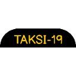

Proyek
Terima kasih telah berkunjung, untuk saat ini KOMPETEGRAM akan melakukan Open Recruitment
mulai tanggal 1 Oktober 2020. Silakan melakukan pendaftaran
Beberapa proyek
Beberapa proyek yang sedang dikembangkan oleh KOMPETEGRAM:
-
AyoKebun (2020)
AyoKebun merupakan aplikasi urban farming bagi masyarakat kota yang berbasis website. AyoKebun menggabungkan konsep Kecerdasan buatan (machine learning) dengan Internet of Things -

TAKSI-19 (2020)
TAKSI-19 atau Kotak Antisipasi COVID-19 merupakan sebuah piranti untuk mendeteksi suhu, masker, counter dinamis pengunjung, dan hand sanitizer tanpa sentuhan. Piranti ini merupakan penggabungan konsep perangkat lunak (website), Kecerdasan buatan (deep learning), dan Internet of Things